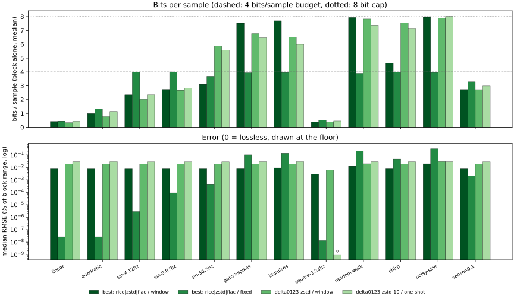

Each window is one block group spanning a minute (60 blocks): 5 consecutive seconds of each of the 12 signal kinds, with every block rescaled to [0, 1] to simulate a single sensor moving through different operating regimes. Results are averaged over 5 groups (one per report seed). Bits per sample are measured over full block groups with all framing overhead included, while errors are computed per block as absolute values (equivalent to a percentage of each block's full scale) and summarized across all blocks or by signal kind.
Regenerate: cd experimental && uv run python make_rate_report.py.

best: … stores a 1-byte coder ID per block followed by each coder's sub-group of
the blocks it won.delta0123-rice uses FLAC-style partitioned Rice coding (2p partitions, each
with its own parameter k, choosing order, p, and k by exact bit cost). delta0123-zstd
(level 9) and delta0123-deflate zigzag residuals into the narrowest byte width, apply byte-stream-split,
and compress. flac runs libFLAC level 8 (LPC up to order 12) on the same integers, counting frame bytes
only. best: … picks the smallest standalone coder per block plus a 1-byte coder ID.
0-order entropy computes the zero-order entropy of the best residual plus headers; it is a reference rather
than a real codec or lower bound, since partitioned Rice, LPC, and LZ matching adapt locally within a block and can beat
it.delta0123-zstd-B). Rather than searching for Δ, these set the step directly to
block range / (2B − 1), pick the difference order minimizing var(diff(q, k)), and make one zstd level-3 call
per block group, lowering B only if a block's estimated size would exceed 8 bits/sample. delta12-zstd-8
restricts the order choice to 1 and 2 for speed.| coder | rate control | avg bits/sample | overall RMSE | median block RMSE | worst block RMSE | worst max |err| | capped blocks | encode µs/block |
|---|---|---|---|---|---|---|---|---|
delta0123-rice | window | 4.000 | 0.0584% | 0.0570% | 0.214% | 0.367% | 1 | 138746 |
delta0123-rice | fixed | 3.706 | 0.2493% | 0.0633% | 3.554% | 6.246% | — | 65482 |
delta0123-zstd | window | 3.996 | 0.0238% | 0.0185% | 0.236% | 0.403% | 38 | 22679 |
delta0123-zstd | fixed | 3.035 | 0.2426% | 0.0402% | 2.703% | 4.818% | — | 6580 |
delta0123-deflate | window | 3.999 | 0.0255% | 0.0214% | 0.230% | 0.399% | 30 | 41042 |
delta0123-deflate | fixed | 2.972 | 0.2850% | 0.0422% | 3.335% | 5.729% | — | 11586 |
flac | window | 3.942 | 0.0422% | 0.0396% | 0.208% | 0.356% | 1 | 4241 |
flac | fixed | 3.484 | 0.2654% | 0.0187% | 3.857% | 6.790% | — | 2228 |
best: rice|zstd | window | 3.999 | 0.0206% | 0.0166% | 0.217% | 0.373% | 29 | 234753 |
best: rice|zstd | fixed | 2.976 | 0.2059% | 0.0274% | 2.703% | 4.818% | — | 68738 |
best: rice|zstd|flac | window | 3.990 | 0.0153% | 0.0078% | 0.205% | 0.359% | 74 | 314802 |
best: rice|zstd|flac | fixed | 3.102 | 0.1994% | 0.0012% | 2.703% | 4.818% | — | 84110 |
0-order entropy | window | 4.000 | 0.0172% | 0.0162% | 0.103% | 0.183% | 2 | 11303 |
0-order entropy | fixed | 3.007 | 0.1720% | 0.0144% | 1.987% | 3.406% | — | 4427 |
delta0123-zstd-8 | one-shot | 2.826 | 0.1086% | 0.1128% | 0.226% | 0.393% | 1 | 11 |
delta0123-zstd-10 | one-shot | 3.844 | 0.0313% | 0.0282% | 0.226% | 0.393% | 36 | 11 |
delta0123-zstd-12 | one-shot | 4.413 | 0.0224% | 0.0071% | 0.226% | 0.393% | 124 | 12 |
delta12-zstd-8 | one-shot | 2.927 | 0.1086% | 0.1128% | 0.226% | 0.393% | 1 | 11 |
quant8-delta1-deflate (earlier codec) | none | 3.079 | 0.1080% | 0.1127% | 0.120% | 0.196% | — | — |
One-shot rows include the per-block min and max stored in the block group. Encode time covers the full single-threaded Python rate-control search per block for window and fixed rows, whereas one-shot runs in a single pass. Because every block spans [0, 1], one-shot's per-block step and the shared window step are directly comparable.
Medians are across the 25 blocks of each signal kind. Bits/sample reflects each block encoded standalone (inside a block group it only contributes a share of the group total).
| signal | order (most blocks) | step | bits/sample | RMSE | mean err | max err | min err | max |err| |
|---|---|---|---|---|---|---|---|---|
| linear | B=10 order 1 | 0.000978 | 0.43 | 0.0282% | -0.0000% | +0.0000% | +0.0000% | 0.0487% |
| quadratic | B=10 order 1 | 0.000978 | 1.14 | 0.0289% | -0.0009% | +0.0000% | +0.0000% | 0.0489% |
| sin-4.12hz | B=10 order 2 | 0.000978 | 2.34 | 0.0281% | +0.0001% | +0.0000% | +0.0000% | 0.0488% |
| sin-9.87hz | B=10 order 3 | 0.000978 | 2.82 | 0.0280% | +0.0004% | +0.0000% | +0.0000% | 0.0488% |
| sin-50.3hz | B=10 order 3 | 0.000978 | 5.58 | 0.0281% | +0.0006% | +0.0000% | +0.0000% | 0.0489% |
| gauss-spikes | B=10 order 2 | 0.000978 | 6.47 | 0.0282% | -0.0002% | +0.0000% | +0.0000% | 0.0488% |
| impulses | B=10 order 0 | 0.000978 | 5.98 | 0.0289% | -0.0007% | +0.0000% | +0.0000% | 0.0489% |
| square-2.24hz | B=9 order 1 | 0.00196 | 0.45 | 0.0000% | +0.0000% | +0.0000% | +0.0000% | 0.0000% |
| random-walk | B=10 order 1 | 0.000978 | 7.38 | 0.0282% | +0.0000% | +0.0000% | +0.0000% | 0.0488% |
| chirp | B=10 order 3 | 0.000978 | 7.12 | 0.0280% | +0.0001% | +0.0000% | +0.0000% | 0.0488% |
| noisy-sine | B=10 order 1 | 0.000978 | 8.02 | 0.0282% | -0.0000% | +0.0000% | +0.0000% | 0.0488% |
| sensor-0.1 | B=10 order 1 | 0.000978 | 2.98 | 0.0283% | +0.0002% | +0.0000% | +0.0000% | 0.0489% |
Block group Δ = 0.000679, 0.000635, 0.00063, 0.00063, 0.000655
Medians are across the 25 blocks of each signal kind. Bits/sample reflects each block encoded standalone (inside a block group it only contributes a share of the group total).
| signal | order (most blocks) | step | bits/sample | RMSE | mean err | max err | min err | max |err| |
|---|---|---|---|---|---|---|---|---|
| linear | order 1 | 0.000635 | 0.33 | 0.0183% | -0.0001% | +0.0090% | +0.0000% | 0.0317% |
| quadratic | order 1 | 0.000635 | 0.77 | 0.0184% | +0.0001% | +0.0090% | +0.0000% | 0.0317% |
| sin-4.12hz | order 2 | 0.000635 | 2.02 | 0.0183% | +0.0001% | +0.0090% | +0.0000% | 0.0317% |
| sin-9.87hz | order 3 | 0.000635 | 2.67 | 0.0183% | +0.0001% | +0.0090% | +0.0000% | 0.0317% |
| sin-50.3hz | order 3 | 0.000635 | 5.86 | 0.0184% | +0.0000% | +0.0090% | +0.0000% | 0.0317% |
| gauss-spikes | order 2 | 0.000635 | 6.78 | 0.0185% | -0.0003% | +0.0090% | +0.0000% | 0.0317% |
| impulses | order 0 | 0.000635 | 6.53 | 0.0185% | +0.0001% | +0.0090% | +0.0000% | 0.0317% |
| square-2.24hz | order 0 | 0.000635 | 0.37 | 0.0063% | +0.0044% | +0.0090% | +0.0000% | 0.0090% |
| random-walk | order 1 | 0.000679 | 7.83 | 0.0197% | +0.0000% | +0.0052% | +0.0000% | 0.0339% |
| chirp | order 3 | 0.000635 | 7.55 | 0.0185% | +0.0003% | +0.0090% | +0.0000% | 0.0317% |
| noisy-sine | order 1 | 0.00105 | 7.89 | 0.0294% | +0.0003% | -0.0076% | +0.0000% | 0.0523% |
| sensor-0.1 | order 1 | 0.000635 | 2.72 | 0.0185% | -0.0002% | +0.0090% | +0.0000% | 0.0316% |
Block group Δ = 0.000278, 0.000275, 0.000266, 0.000261, 0.000245
Medians are across the 25 blocks of each signal kind. Bits/sample reflects each block encoded standalone (inside a block group it only contributes a share of the group total).
| signal | order (most blocks) | step | bits/sample | RMSE | mean err | max err | min err | max |err| |
|---|---|---|---|---|---|---|---|---|
| linear | delta0123-zstd order 1 | 0.000266 | 0.42 | 0.0077% | -0.0000% | -0.0009% | +0.0000% | 0.0133% |
| quadratic | delta0123-zstd order 1 | 0.000266 | 0.99 | 0.0076% | +0.0001% | -0.0009% | +0.0000% | 0.0133% |
| sin-4.12hz | delta0123-zstd order 2 | 0.000266 | 2.34 | 0.0076% | +0.0000% | -0.0009% | +0.0000% | 0.0133% |
| sin-9.87hz | delta0123-rice order 3 | 0.000266 | 2.74 | 0.0077% | -0.0001% | -0.0009% | +0.0000% | 0.0133% |
| sin-50.3hz | flac LPC | 0.000266 | 3.10 | 0.0077% | +0.0001% | -0.0009% | +0.0000% | 0.0133% |
| gauss-spikes | flac LPC | 0.000266 | 7.53 | 0.0078% | -0.0000% | -0.0009% | +0.0000% | 0.0133% |
| impulses | delta0123-zstd order 0 | 0.000316 | 7.70 | 0.0091% | -0.0000% | -0.0018% | +0.0000% | 0.0158% |
| square-2.24hz | delta0123-zstd order 0 | 0.000266 | 0.38 | 0.0028% | -0.0004% | -0.0009% | +0.0000% | 0.0040% |
| random-walk | delta0123-rice order 1 | 0.00044 | 7.94 | 0.0126% | -0.0000% | +0.0049% | +0.0000% | 0.0220% |
| chirp | flac LPC | 0.000266 | 4.63 | 0.0077% | +0.0001% | -0.0009% | +0.0000% | 0.0133% |
| noisy-sine | delta0123-rice order 1 | 0.00069 | 7.96 | 0.0196% | -0.0000% | -0.0036% | +0.0000% | 0.0345% |
| sensor-0.1 | delta0123-zstd order 1 | 0.000266 | 2.73 | 0.0077% | -0.0003% | -0.0009% | +0.0000% | 0.0131% |
Block group Δ = 9.31e-10, 9.31e-10, 9.31e-10, 9.31e-10, 9.31e-10
Medians are across the 25 blocks of each signal kind. Bits/sample reflects each block encoded standalone (inside a block group it only contributes a share of the group total).
| signal | order (most blocks) | step | bits/sample | RMSE | mean err | max err | min err | max |err| |
|---|---|---|---|---|---|---|---|---|
| linear | delta0123-zstd order 1 | 9.31e-10 | 0.44 | 0.0000% | -0.0000% | -0.0000% | +0.0000% | 0.0000% |
| quadratic | delta0123-zstd order 2 | 9.31e-10 | 1.32 | 0.0000% | -0.0000% | -0.0000% | +0.0000% | 0.0000% |
| sin-4.12hz | flac LPC | 1e-07 | 3.98 | 0.0000% | +0.0000% | -0.0000% | +0.0000% | 0.0000% |
| sin-9.87hz | flac LPC | 3.21e-06 | 3.98 | 0.0001% | -0.0000% | +0.0002% | +0.0000% | 0.0002% |
| sin-50.3hz | flac LPC | 1.66e-05 | 3.69 | 0.0005% | +0.0000% | +0.0001% | +0.0000% | 0.0008% |
| gauss-spikes | delta0123-rice order 1 | 0.00358 | 3.94 | 0.1029% | -0.0026% | +0.0027% | +0.0000% | 0.1786% |
| impulses | delta0123-zstd order 0 | 0.00465 | 3.96 | 0.1378% | -0.0055% | -0.1252% | +0.0000% | 0.2322% |
| square-2.24hz | delta0123-zstd order 0 | 9.31e-10 | 0.50 | 0.0000% | -0.0000% | -0.0000% | +0.0000% | 0.0000% |
| random-walk | delta0123-rice order 1 | 0.00716 | 3.90 | 0.2051% | -0.0034% | -0.0107% | +0.0000% | 0.3576% |
| chirp | flac LPC | 0.00164 | 3.98 | 0.0472% | +0.0000% | +0.0207% | +0.0000% | 0.0819% |
| noisy-sine | delta0123-rice order 1 | 0.011 | 3.96 | 0.3188% | -0.0036% | +0.5417% | +0.0000% | 0.5521% |
| sensor-0.1 | delta0123-zstd order 1 | 7.26e-05 | 3.29 | 0.0021% | +0.0000% | -0.0018% | +0.0000% | 0.0036% |